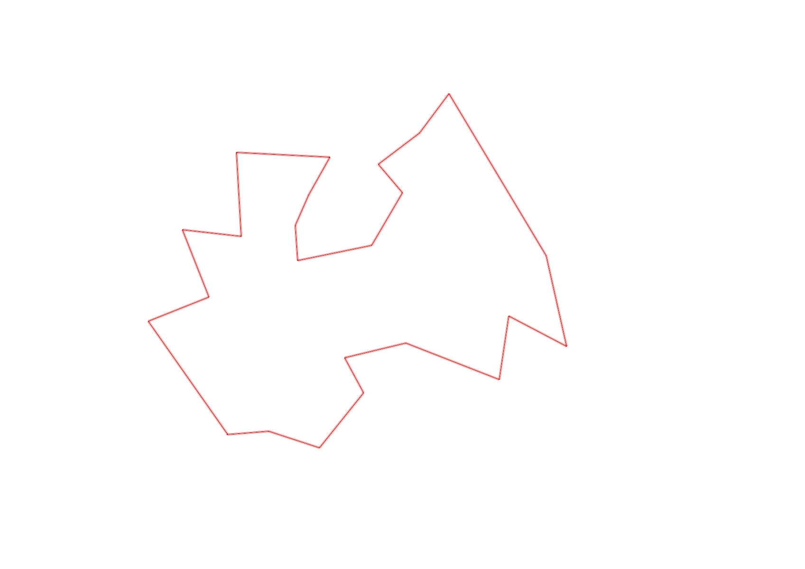
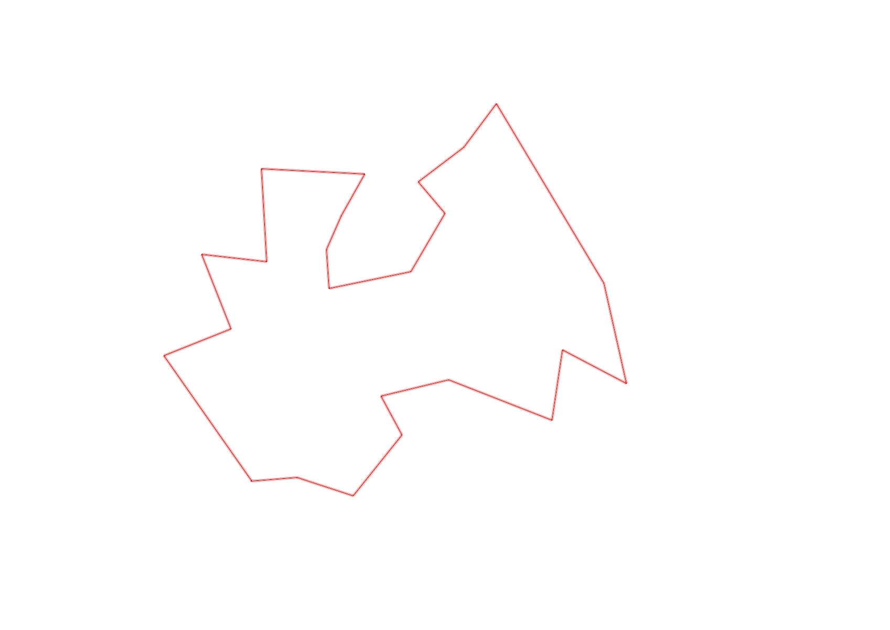

| Control |
Points |
Time Punched |
Distance |
Your Time |
Pace |
Place |
Fastest Time |
Median Time |
% Behind Fastest |
| 52 |
50 |
|
0.24 |
0:01:21 |
05:37 |
1 / 6 |
0:01:21 |
0:01:29 |
0% |
| 40 |
40 |
|
0.3 |
0:01:48 |
06:00 |
2 / 5 |
0:01:46 |
0:01:48 |
1% |
| 60 |
60 |
|
0.4 |
0:01:24 |
03:30 |
1 / 5 |
0:01:24 |
0:01:30 |
0% |
| 83 |
80 |
|
0.23 |
0:02:22 |
10:17 |
1 / 6 |
0:02:22 |
0:02:53 |
0% |
| 81 |
80 |
|
0.36 |
0:01:59 |
05:30 |
2 / 6 |
0:01:53 |
0:02:16 |
5% |
| 57 |
50 |
|
0.57 |
0:03:30 |
06:08 |
4 / 6 |
0:03:04 |
0:03:27 |
14% |
| 64 |
60 |
|
0.37 |
0:02:41 |
07:15 |
1 / 3 |
0:02:41 |
0:03:26 |
0% |
| 75 |
70 |
|
0.37 |
0:02:02 |
05:29 |
1 / 3 |
0:02:02 |
0:02:34 |
0% |
| 101 |
100 |
|
0.53 |
0:04:16 |
08:03 |
1 / 2 |
0:04:16 |
0:04:23 |
0% |
| 43 |
40 |
|
1.08 |
0:03:57 |
03:39 |
1 / 4 |
0:03:57 |
0:04:35 |
0% |
| 94 |
90 |
|
0.28 |
0:01:44 |
06:11 |
1 / 4 |
0:01:44 |
0:02:18 |
0% |
| 47 |
40 |
|
0.3 |
0:01:40 |
05:33 |
1 / 5 |
0:01:40 |
0:02:01 |
0% |
| 67 |
60 |
|
0.21 |
0:03:05 |
14:40 |
3 / 3 |
0:01:51 |
0:02:39 |
66% |
| 102 |
100 |
|
0.35 |
0:02:01 |
05:45 |
1 / 3 |
0:02:01 |
0:02:33 |
0% |
| 34 |
30 |
|
0.43 |
0:02:23 |
05:32 |
1 / 4 |
0:02:23 |
0:02:45 |
0% |
| 39 |
30 |
|
0.2 |
0:01:24 |
07:00 |
1 / 1 |
0:01:24 |
0:01:24 |
0% |
| 77 |
70 |
|
0.19 |
0:01:47 |
09:23 |
1 / 2 |
0:01:47 |
0:02:04 |
0% |
| 32 |
30 |
|
0.25 |
0:01:43 |
06:52 |
1 / 2 |
0:01:43 |
0:01:45 |
0% |
| 49 |
40 |
|
0.53 |
0:02:59 |
05:37 |
1 / 1 |
0:02:59 |
0:02:59 |
0% |
| 44 |
40 |
|
0.48 |
0:02:04 |
04:18 |
1 / 1 |
0:02:04 |
0:02:04 |
0% |
| 82 |
80 |
|
0.34 |
0:04:16 |
12:32 |
1 / 2 |
0:04:16 |
0:04:32 |
0% |
| 53 |
50 |
|
0.41 |
0:03:30 |
08:32 |
2 / 2 |
0:03:29 |
0:03:29 |
0% |
| 93 |
90 |
|
0.37 |
0:02:50 |
07:39 |
1 / 1 |
0:02:50 |
0:02:50 |
0% |
| Finish |
0 |
|
0.79 |
0:04:05 |
05:10 |
1 / 1 |
0:04:05 |
0:04:05 |
0% |
Total Distance Covered: 9.58km
Points Scored: 1380
Late Penalty: -20
Final Score: 1360
Total Time: 1hours 0minutes 51seconds
Efficiency: 141.96 points/km
 
